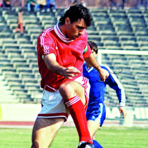

22/07/1983
ПОДПИСВА С ЦСКА
На клубно ниво, Стоичков прекарва шест години в ЦСКА София и става играчът, отбелязъл най-много голове в Европа през 1990, получавайки европейската Златна Обувка. Той печели 3 титли и довежда отбора до полуфинал на Световното Клубно Първенство срещу Барселона през 1989г. Стоичков отбелязва 3 гола в два мача срещу испанския гранд.